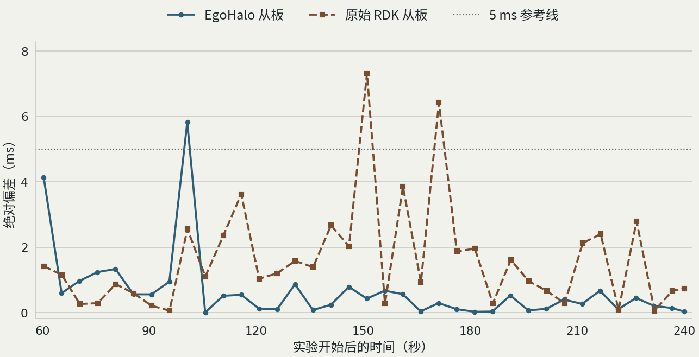

多 X5 蓝牙配对与对时
我用蓝牙让多块 X5 自动组网，并对齐它们的系统时间。PAN 上跑 NTP 只能到毫秒级；改为读取两板共享的蓝牙控制器时钟后，软件估计的偏差降到几十微秒。

- 目标
- 多块 X5 靠近后自动发现、选主，板间相对时间一致，目标 10 ms 以内
- 我做的
- 自动选主与组网程序、三板 PAN + chrony 部署和实板问题修复、共享蓝牙时钟映射实验
- 技术栈
- BlueZ · PAN · chrony / NTP · HCI Read Clock · L2CAP · Python
- 数据
- 三板约 4 分钟，每块从板 37 次读数；两板 185 秒，185 轮测量
- 关键发现
- PAN 上的 NTP 绝对偏差 P95 为 4–6 ms。两块板连在同一条经典蓝牙链路上时，可以把各自系统时间映射到同一个控制器时钟，软件估计的偏差 P95 降到 57.1 µs。
- 目前进展
- 实验室原型。微秒级数字是同源软件估计，还没有用独立的共同触发验证。
先配对，再自动组网
三块板逐对完成数字比较配对并互设可信，运行相同程序，不预设主从。每块板发现邻居后按蓝牙地址选出同一台主板。主板注册 BlueZ NAP，从板加入 PAN；原有的 BLE 配网仍由原服务处理。
- 首次接入
- 补做定向 SDP 服务发现，以识别配对后才注册的 NAP。
- 两块从板
- 主板在连接加密前建立合适的 ACL 角色，避免并发接入时出现角色切换失败。
- 保持连接
- 已连接节点不因扫描漏报过期，已有 PAN 连接可继续给 chrony 提供样本。
三板 PAN 的毫秒级结果
两块从板通过 PAN 上的 NTP 跟随同一台离线主板。NTP 用收发双方的四个时间戳估计时差与往返延迟，chrony 过滤历次样本并调整本机时钟。实测约 4 分钟，去掉最初 60 秒后，每块从板保留 37 次读数。
- EgoHalo 从板绝对偏差 P95
- 4.13 ms
- RDK 从板绝对偏差 P95
- 6.41 ms
- 观测时长
- 约 4 分钟
这里衡量的是从板相对同一主板的 chrony 估计。两块板在这个窗口的最大读数分别是 5.82 ms 和 7.31 ms，都在 10 ms 目标内。
映射到同一蓝牙时钟
经典蓝牙连接的两端共享同一个 BR/EDR 时钟。另一轮实验只用两块 X5：用 HCI Read Clock 读这个时钟，取调用前后系统时间的中点。多次读取的结果按 312.5 µs 每 tick 归一到同一个参考 tick，再取中位数，估计该 tick 对应的系统时间。tick 回绕用有符号最短距离处理。
- 重复读钟记 tick 与 HCI 调用中点
- 映射到同一 tick换算各次读数并取中位数
- 求两板偏差映射相减，合格样本交给 chrony
主板通过已配对的 L2CAP 发送参考 tick 及其主机时间，从板换算到同一 tick 后相减。任一端的读钟离散度超过 2 ms 就拒绝整轮。185 秒共 185 轮，其中 184 轮入选。
- 绝对偏差中位数
- 22.6 µs
- 绝对偏差 P95
- 57.1 µs
- 绝对偏差最大值
- 89.4 µs
局限与下一步
- 微秒数字是自估。它来自同一套读钟和 chrony 反馈，控制器也没有给出读钟精度保证。下一步给两块板接共同的 GPIO 触发，各自记时间戳，测真实偏差。
- 测试时间短。两组实验分别只有约 4 分钟和 185 秒，还没做 30 分钟、高 CPU 负载和遮挡下的验收。
- 断链恢复慢。三板实验中一块从板断链后约 17.5 秒才自动恢复 PAN，没达到 5 秒目标。
- 只保证相对时间。离线主板没有外部 UTC 源，同步的是板间一致，不是绝对时间。